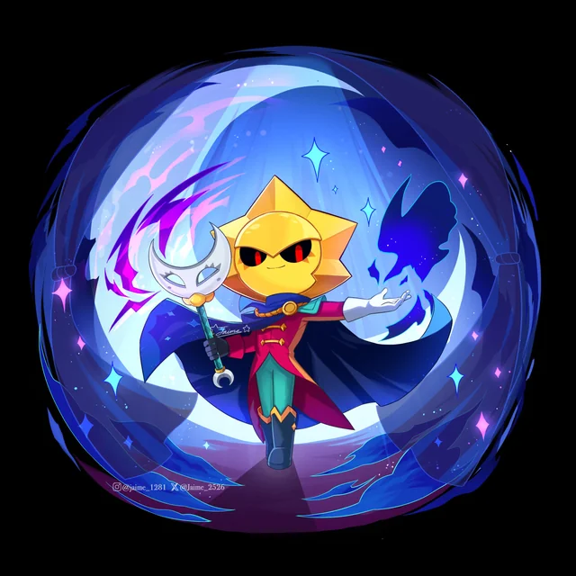

Votos abrem brevemente (dia 1/11/2026) Colocação de skins aberta (fecha dia 1/11/2026)
Votos abrem brevemente (dia 1/11/2026)
Colocação de skins aberta (fecha dia 1/11/2026)

O Natal está a chegar e o Sirius ainda não tem nenhuma skin. E como estamos perto do Natal, podemos fazer uma skin de Natal para o Sirius.